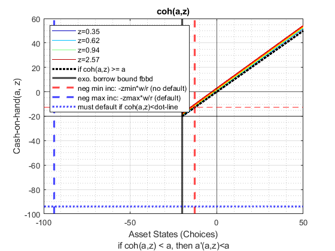

Generate States, Choices and Shocks Grids and Get Functions (Borr + Save)
back to Fan's Dynamic Assets Repository Table of Content.
Contents
function [armt_map, func_map] = ffs_abz_get_funcgrid(varargin)
FFS_ABZ_GET_FUNCGRID get funcs, params, states choices shocks grids
centralized gateway for retrieving parameters, and solution grids and functions
@param param_map container parameter container
@param support_map container support container
@param bl_input_override boolean if true varargin contained param_map and support_map fully overrides local default. Local default is not invoked. This could be important for speed if this function is getting invoked within certain loops. Default is 0.
@return armt_map container container with states, choices and shocks grids that are inputs for grid based solution algorithm
@return func_map container container with function handles for consumption cash-on-hand etc.
@example
it_param_set = 2; bl_input_override = true; [param_map, support_map] = ffs_abz_set_default_param(it_param_set); [armt_map, func_map] = ffs_abz_get_funcgrid(param_map, support_map, bl_input_override);
@include
Default
bl_input_override = 0; if (length(varargin) == 3) bl_input_override = varargin{3}; end if (bl_input_override) % override when called from outside [param_map, support_map, ~] = varargin{:}; else close all % default internal run it_param_set = 4; [param_map, support_map] = ffs_abz_set_default_param(it_param_set); support_map('bl_graph_funcgrids') = true; support_map('bl_display_funcgrids') = true; default_maps = {param_map, support_map}; % numvarargs is the number of varagin inputted [default_maps{1:length(varargin)}] = varargin{:}; param_map = [param_map; default_maps{1}]; support_map = [support_map; default_maps{2}]; end
Parse Parameters
params_group = values(param_map, {'it_z_n', 'fl_z_mu', 'fl_z_rho', 'fl_z_sig'});
[it_z_n, fl_z_mu, fl_z_rho, fl_z_sig] = params_group{:};
params_group = values(param_map, {'fl_b_bd', 'bl_default', 'fl_a_min', 'fl_a_max', 'bl_loglin', 'fl_loglin_threshold', 'it_a_n'});
[fl_b_bd, bl_default, fl_a_min, fl_a_max, bl_loglin, fl_loglin_threshold, it_a_n] = params_group{:};
params_group = values(param_map, {'fl_crra', 'fl_c_min'});
[fl_crra, fl_c_min] = params_group{:};
params_group = values(param_map, {'fl_r_save', 'fl_r_borr', 'fl_w'});
[fl_r_save, fl_r_borr, fl_w] = params_group{:};
params_group = values(support_map, {'bl_graph_funcgrids', 'bl_display_funcgrids'});
[bl_graph_funcgrids, bl_display_funcgrids] = params_group{:};
Get Shock Grids
[~, mt_z_trans, ar_stationary, ar_z] = ffto_gen_tauchen_jhl(fl_z_mu,fl_z_rho,fl_z_sig,it_z_n);
Get Equations
[f_util_log, f_util_crra, f_util_standin, f_inc, f_coh, f_cons_coh, f_cons, f_cons_checkcmin] = ...
ffs_abz_set_functions(fl_crra, fl_c_min, fl_r_save, fl_r_borr, fl_w);
Get Asset and Choice Grid
note this requires ar_z
if (bl_loglin) % C:\Users\fan\M4Econ\asset\grid\ff_grid_loglin.m ar_a = fft_gen_grid_loglin(it_a_n, fl_a_max, fl_a_min, fl_loglin_threshold); else [ar_a, fl_borr_yminbd, fl_borr_ymaxbd] = ffs_abz_gen_borrsave_grid(fl_b_bd, bl_default, ar_z, ... fl_w, fl_r_borr, fl_a_min, fl_a_max, it_a_n); end
Store
armt_map = containers.Map('KeyType','char', 'ValueType','any'); armt_map('ar_a') = ar_a; armt_map('mt_z_trans') = mt_z_trans; armt_map('ar_stationary') = ar_stationary; armt_map('ar_z') = ar_z; func_map = containers.Map('KeyType','char', 'ValueType','any'); func_map('f_util_log') = f_util_log; func_map('f_util_crra') = f_util_crra; func_map('f_util_standin') = f_util_standin; func_map('f_inc') = f_inc; func_map('f_coh') = f_coh; func_map('f_cons') = f_cons; func_map('f_cons_coh') = f_cons_coh; func_map('f_cons_checkcmin') = f_cons_checkcmin;
Graph: A, Shocks, COH, and Defaults
- y-axis : coh(a,z)
- x-axis : a
- color: z
- overlay: coh points points where there is default.
if (bl_graph_funcgrids) % mesh a and and z [mt_a_mesh_z, mt_z_mesh_a] = ndgrid(ar_a, ar_z); % cash-on-hand given a and z mt_coh = f_coh(mt_z_mesh_a, mt_a_mesh_z); % loop over level vs log graphs for sub_j=1:1:1 figure('PaperPosition', [0 0 7 4]); if (sub_j == 1) x_mat = mt_a_mesh_z; y_mat = mt_coh; st_title = 'coh(a,z)'; st_ylabel = 'Cash-on-hand(a, z)'; st_xlabel = 'Asset States (Choices)'; fl_b_bd_graph = fl_b_bd; fl_borr_yminbd_graph = fl_borr_yminbd; fl_borr_ymaxbd_graph = fl_borr_ymaxbd; else x_mat = log(mt_a_mesh_z - min(min(mt_a_mesh_z)) + 1); y_mat = log(mt_coh - min(min(mt_coh)) + 1); st_title = 'coh(a,z) log scale'; st_ylabel = 'log(Cash-on-hand(a, z) - min(coh) + 1)'; st_xlabel = 'log(a - min(a) + 1)'; fl_b_bd_graph = log(fl_b_bd - min(min(mt_a_mesh_z)) + 1); fl_borr_yminbd_graph = log(fl_borr_yminbd - min(min(mt_a_mesh_z)) + 1); fl_borr_ymaxbd_graph = log(fl_borr_ymaxbd - min(min(mt_a_mesh_z)) + 1); end % plot main x and y chart = plot(x_mat, y_mat, 'blue'); % add color based on z clr = jet(numel(chart)); for m = 1:numel(chart) set(chart(m), 'Color', clr(m,:)) end % if (length(ar_w_level_full) <= 100) % scatter(ar_a_meshk, ar_k_mesha, 3, 'filled', ... % 'MarkerEdgeColor', 'b', 'MarkerFaceColor', 'b'); % end % if (length(ar_w_level_full) <= 100) % gf_invalid_scatter = scatter(ar_a_meshk_full(ar_bl_wkb_invalid),... % ar_k_mesha_full(ar_bl_wkb_invalid),... % 20, 'O', 'MarkerEdgeColor', 'black', 'MarkerFaceColor', 'black'); % end % add various borrowing bound lines % add 0 lines xline(0); yline(0); % add 45 degrees line hline = refline([1 0]); hline.Color = 'k'; hline.LineStyle = ':'; hline.HandleVisibility = 'off'; hline.LineWidth = 2.5; title(st_title) ylabel(st_ylabel) grid on; grid minor; legend2plot = fliplr([1 round(numel(chart)/3) round((2*numel(chart))/4) numel(chart)]); legendCell = cellstr(num2str(ar_z', 'z=%3.2f')); chart(length(chart)+1) = hline; legendCell{length(legendCell) + 1} = 'if coh(a,z) >= a'; legend2plot = [legend2plot length(legendCell)]; % if borrow plot additional borrowing bound lines if (fl_b_bd >= 0 ) ar_legend_ele = [legend2plot]; xlabel({st_xlabel}) else % add fl_b_bd exo borrow line if (fl_b_bd >= min(ar_a)) xline_borrbound = xline(fl_b_bd_graph); xline_borrbound.HandleVisibility = 'on'; xline_borrbound.LineStyle = '-'; xline_borrbound.Color = 'black'; xline_borrbound.LineWidth = 2.5; yline_borrbound = yline(fl_b_bd_graph); yline_borrbound.HandleVisibility = 'off'; yline_borrbound.LineStyle = '-'; yline_borrbound.Color = 'black'; yline_borrbound.LineWidth = 1; end xline_yminbd = xline(fl_borr_yminbd_graph); xline_yminbd.HandleVisibility = 'on'; xline_yminbd.LineStyle = '--'; xline_yminbd.Color = 'red'; xline_yminbd.LineWidth = 2.5; yline_yminbd = yline(fl_borr_yminbd_graph); yline_yminbd.HandleVisibility = 'off'; yline_yminbd.LineStyle = '--'; yline_yminbd.Color = 'red'; yline_yminbd.LineWidth = 1; if (bl_default) xline_ymaxbd = xline(fl_borr_ymaxbd_graph); xline_ymaxbd.HandleVisibility = 'on'; xline_ymaxbd.LineStyle = '--'; xline_ymaxbd.Color = 'blue'; xline_ymaxbd.LineWidth = 2.5; yline_ymaxbd = yline(fl_borr_ymaxbd_graph); yline_ymaxbd.HandleVisibility = 'on'; yline_ymaxbd.LineStyle = ':'; yline_ymaxbd.Color = 'blue'; yline_ymaxbd.LineWidth = 2.5; end % add bound line legends it_addlines_cn = 0; if (fl_b_bd >= min(ar_a)) it_addlines_cn = it_addlines_cn + 1; chart(length(chart)+1) = xline_borrbound; legendCell{length(legendCell) + 1} = 'exo. borrow bound fbbd'; end it_addlines_cn = it_addlines_cn + 1; chart(length(chart)+1) = xline_yminbd; legendCell{length(legendCell) + 1} = 'neg min inc: -zmin*w/r (no default)'; if (bl_default) it_addlines_cn = it_addlines_cn + 1; chart(length(chart)+1) = xline_ymaxbd; legendCell{length(legendCell) + 1} = 'neg max inc: -zmax*w/r (default)'; it_addlines_cn = it_addlines_cn + 1; chart(length(chart)+1) = yline_ymaxbd; legendCell{length(legendCell) + 1} = 'must default if coh(a,z)<dot-line'; end % draw legend ar_legend_ele = [legend2plot length(legendCell)-it_addlines_cn:1:length(legendCell)]; xlabel({st_xlabel 'if coh(a,z) < a, then a''(a,z)<a'}) end % draw legends legend(chart(unique(ar_legend_ele)), legendCell(unique(ar_legend_ele)), 'Location', 'northwest'); end end
Display
if (bl_display_funcgrids) disp('ar_z'); disp(size(ar_z)); disp(ar_z); disp('mt_z_trans'); disp(size(mt_z_trans)); disp(mt_z_trans); param_map_keys = keys(func_map); param_map_vals = values(func_map); for i = 1:length(func_map) st_display = strjoin(['pos =' num2str(i) '; key =' string(param_map_keys{i}) '; val =' func2str(param_map_vals{i})]); disp(st_display); end end
ar_z
1 15
Columns 1 through 7
0.3474 0.4008 0.4623 0.5333 0.6152 0.7097 0.8186
Columns 8 through 14
0.9444 1.0894 1.2567 1.4496 1.6723 1.9291 2.2253
Column 15
2.5670
mt_z_trans
15 15
Columns 1 through 7
0.2602 0.2683 0.2555 0.1492 0.0534 0.0117 0.0016
0.1123 0.1962 0.2763 0.2386 0.1263 0.0410 0.0081
0.0371 0.1049 0.2185 0.2790 0.2185 0.1049 0.0309
0.0092 0.0410 0.1263 0.2386 0.2763 0.1962 0.0854
0.0017 0.0117 0.0534 0.1492 0.2555 0.2683 0.1728
0.0002 0.0024 0.0165 0.0682 0.1728 0.2683 0.2555
0.0000 0.0004 0.0037 0.0228 0.0854 0.1962 0.2763
0.0000 0.0000 0.0006 0.0056 0.0309 0.1049 0.2185
0.0000 0.0000 0.0001 0.0010 0.0081 0.0410 0.1263
0.0000 0.0000 0.0000 0.0001 0.0016 0.0117 0.0534
0.0000 0.0000 0.0000 0.0000 0.0002 0.0024 0.0165
0.0000 0.0000 0.0000 0.0000 0.0000 0.0004 0.0037
0.0000 0.0000 0.0000 0.0000 0.0000 0.0000 0.0006
0.0000 0.0000 0.0000 0.0000 0.0000 0.0000 0.0001
0.0000 0.0000 0.0000 0.0000 0.0000 0.0000 0.0000
Columns 8 through 14
0.0001 0.0000 0.0000 0.0000 0.0000 0.0000 0.0000
0.0010 0.0001 0.0000 0.0000 0.0000 0.0000 0.0000
0.0056 0.0006 0.0000 0.0000 0.0000 0.0000 0.0000
0.0228 0.0037 0.0004 0.0000 0.0000 0.0000 0.0000
0.0682 0.0165 0.0024 0.0002 0.0000 0.0000 0.0000
0.1492 0.0534 0.0117 0.0016 0.0001 0.0000 0.0000
0.2386 0.1263 0.0410 0.0081 0.0010 0.0001 0.0000
0.2790 0.2185 0.1049 0.0309 0.0056 0.0006 0.0000
0.2386 0.2763 0.1962 0.0854 0.0228 0.0037 0.0004
0.1492 0.2555 0.2683 0.1728 0.0682 0.0165 0.0024
0.0682 0.1728 0.2683 0.2555 0.1492 0.0534 0.0117
0.0228 0.0854 0.1962 0.2763 0.2386 0.1263 0.0410
0.0056 0.0309 0.1049 0.2185 0.2790 0.2185 0.1049
0.0010 0.0081 0.0410 0.1263 0.2386 0.2763 0.1962
0.0001 0.0016 0.0117 0.0534 0.1492 0.2555 0.2683
Column 15
0
0.0000
0.0000
0.0000
0.0000
0.0000
0.0000
0.0000
0.0000
0.0002
0.0017
0.0092
0.0371
0.1123
0.2602
pos = 1 ; key = f_coh ; val = @(z,b)(z*fl_w+(b.*(1+fl_r_save).*(b>0)+b.*(1+fl_r_borr).*(b<=0)))
pos = 2 ; key = f_cons ; val = @(z,b,bprime)(f_coh(z,b)-bprime)
pos = 3 ; key = f_cons_checkcmin ; val = @(z,b,bprime)((f_coh(z,b)-bprime).*(f_coh(z,b)-bprime>=fl_c_min)+fl_c_min.*(f_coh(z,b)-bprime<fl_c_min))
pos = 4 ; key = f_cons_coh ; val = @(coh,bprime)(coh-bprime)
pos = 5 ; key = f_inc ; val = @(z,b)(z*fl_w+(b.*(fl_r_save).*(b>0)+b.*(fl_r_borr).*(b<=0)))
pos = 6 ; key = f_util_crra ; val = @(c)(((c).^(1-fl_crra)-1)./(1-fl_crra))
pos = 7 ; key = f_util_log ; val = @(c)log(c)
pos = 8 ; key = f_util_standin ; val = @(z,b)f_util_log(f_coh(z,b).*(f_coh(z,b)>0)+fl_c_min.*(f_coh(z,b)<=0))
end
ans =
Map with properties:
Count: 4
KeyType: char
ValueType: any